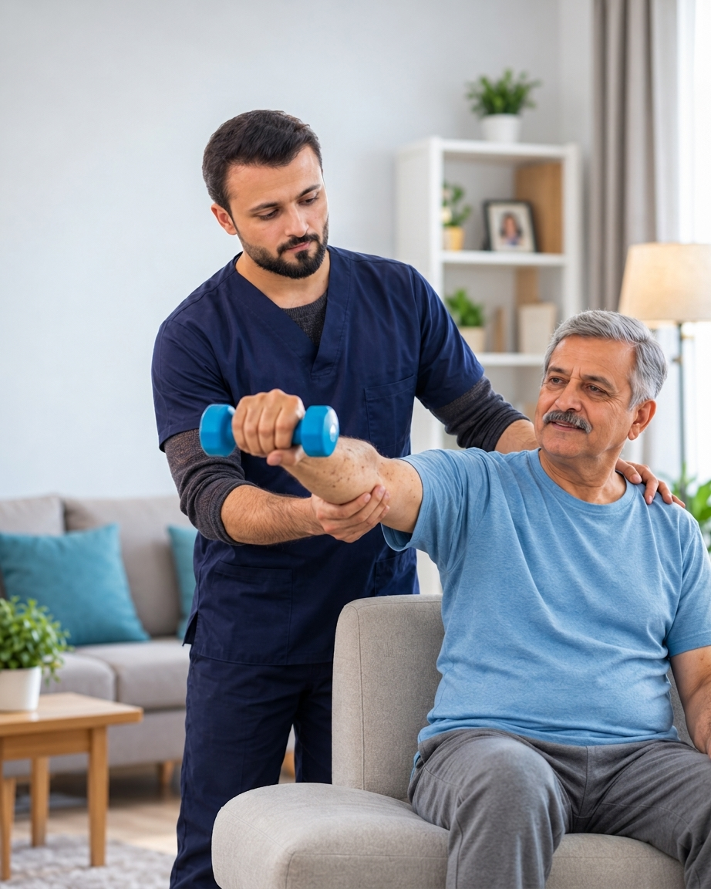
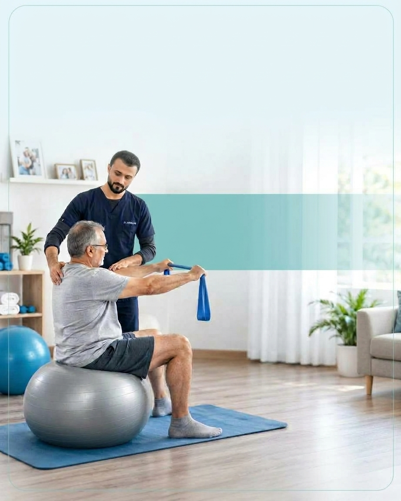

Neck Pain & Cervical Spondylosis
Support for neck discomfort, stiffness, and restricted movement.
Professional physiotherapy treatment at your home in Islamabad and Rawalpindi. Our goal is to help patients reduce pain, restore mobility, and improve quality of life through evidence-based physiotherapy care.

We provide individualized physiotherapy and rehabilitation for musculoskeletal conditions, sports injuries, neurological disorders, and recovery after surgery or fractures. Treatment is planned according to each patient's assessment, needs, and rehabilitation goals.
Physiotherapy support for a range of conditions affecting movement, strength, comfort, and everyday activities.
Support for neck discomfort, stiffness, and restricted movement.
Individualized care to improve back mobility and manage symptoms.
Exercises and rehabilitation to support knee movement and function.
Guided rehabilitation to address shoulder stiffness and limited range of motion.
Assessment and treatment to support upper-limb movement and function.
Rehabilitation focused on recovery, strength, and a safe return to activity.
Individualized management for spinal symptoms and movement limitations.
Progressive mobility and strengthening after fracture, as medically appropriate.
Functional rehabilitation to support balance, movement, and daily activities.
Individualized therapy focused on movement, function, and independence.
Development-focused physiotherapy for children with cerebral palsy.
Rehabilitation guided by the procedure, recovery stage, and medical advice.
Assessment and appropriate therapy for jaw discomfort and restricted movement.
Support for wrist symptoms and hand function following assessment.
Appropriate manual techniques and exercises to address muscle discomfort.
Receive personalized physiotherapy in the comfort of your home. Our treatment approach is selected according to your assessment, condition, and recovery goals.
Care to help manage pain and improve everyday movement.
TENS, EMS, and ultrasound where clinically appropriate and available.
Appropriate hands-on techniques to support joint mobility.
Guided exercises to improve strength, balance, and function.
Movement guidance and exercises for posture and body mechanics.
Progressive rehabilitation to support a safe return to activity.

Simple steps to arrange your home physiotherapy appointment.
Contact us to discuss your needs and preferred appointment time.
Your physiotherapist assesses your condition and functional goals.
Receive an individualized treatment and rehabilitation plan.
Your plan is reviewed and adjusted according to your progress.
Contact Mobile Physio to discuss home physiotherapy appointments in Islamabad and Rawalpindi.